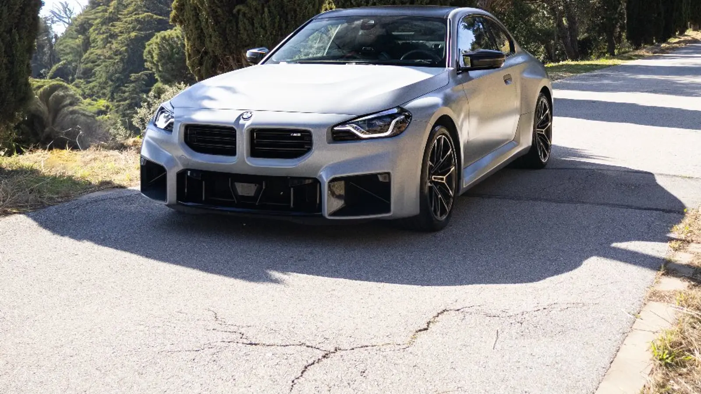

Guías y consejos
El Blog
Precios, comparativas y mantenimiento — escrito por el equipo del taller, sin humo comercial.

9 jul 2026 · Car Wrap
¿Cuánto cuesta vinilar un coche?
Tarifas reales 2026: acentos desde 250 € y cambio de color completo desde 1.490 €. Qué incluye cada precio y cómo comparar presupuestos.
Leer artículo →
9 jul 2026 · PPF · Ceramic
PPF o cerámico: ¿qué elegir?
Protección física frente a protección química: duración, precios reales y qué opción encaja con tu coche.
Leer artículo →
9 jul 2026 · PPF
¿Cuánto cuesta el PPF para tu coche?
Frontal desde 890 €, frontal completo 1.190 € y carrocería completa 2.390 €, IVA incluido. Qué incluye cada cobertura.
Leer artículo →
9 jul 2026 · Detailing
Limpieza de tapicería del coche: precios
De 35 € a 490 € según el nivel: qué incluye cada servicio, qué técnicas se usan y cuándo compensa cada opción.
Leer artículo →